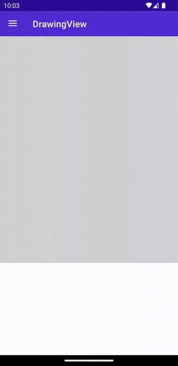
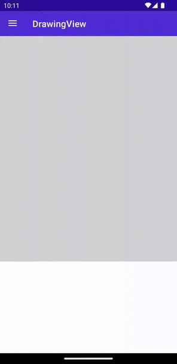

DrawingView
The DrawingView provides a surface that allows for the drawing of lines through the use of touch or mouse interaction. The result of a users drawing can be saved out as an image.
A common use case for this is to provide a signature box in an application.
Basic usage
DrawingView allows to set line color, line width and bind to the collection of lines.
XAML
Including the XAML namespace
In order to use the toolkit in XAML the following xmlns needs to be added into your page or view:
xmlns:toolkit="http://schemas.microsoft.com/dotnet/2022/maui/toolkit"
Therefore the following:
<ContentPage
x:Class="CommunityToolkit.Maui.Sample.Pages.MyPage"
xmlns="http://schemas.microsoft.com/dotnet/2021/maui"
xmlns:x="http://schemas.microsoft.com/winfx/2009/xaml">
</ContentPage>
Would be modified to include the xmlns as follows:
<ContentPage
x:Class="CommunityToolkit.Maui.Sample.Pages.MyPage"
xmlns="http://schemas.microsoft.com/dotnet/2021/maui"
xmlns:x="http://schemas.microsoft.com/winfx/2009/xaml"
xmlns:toolkit="http://schemas.microsoft.com/dotnet/2022/maui/toolkit">
</ContentPage>
Using the DrawingView
<toolkit:DrawingView
Lines="{Binding MyLines}"
LineColor="Red"
LineWidth="5" />
C#
using CommunityToolkit.Maui.Views;
var drawingView = new DrawingView
{
Lines = new ObservableCollection<IDrawingLine>(),
LineColor = Colors.Red,
LineWidth = 5
};
The following screenshot shows the resulting DrawingView on Android:

MultiLine usage
By default DrawingView supports only 1 line. To enable MultiLine set IsMultiLineModeEnabled to true. Make sure ShouldClearOnFinish is false.
XAML
<views:DrawingView
Lines="{Binding MyLines}"
IsMultiLineModeEnabled="true"
ShouldClearOnFinish="false" />
C#
using CommunityToolkit.Maui.Views;
var gestureImage = new Image();
var drawingView = new DrawingView
{
Lines = new ObservableCollection<IDrawingLine>(),
IsMultiLineModeEnabled = true,
ShouldClearOnFinish = false,
};
The following screenshot shows the resulting DrawingView on Android:

Saving the result out to an image
The .NET MAUI Community Toolkit offers several options for saving the resulting drawing out to an image, these options are as follows:
Saving from the DrawingView
The DrawingView provides the GetImageStream method that will generate an image and return the contents in a Stream.
The following example will export the drawing to an image at a desired width of 400 and a desired height of 300. The desired dimensions will be adjusted to make sure the aspect ratio of the drawing it retained.
await drawingView.GetImageStream(desiredWidth: 400, desiredHeight: 300);
Note
By default the GetImageStream method will return an image that contains the lines drawn, this will not match the full surface that user sees. In order to generate an image that directly matches the surface displayed in the application the GetImageStream method with the DrawingViewOutputOption parameter must be used.
The following example shows how to generate an image that directly matches the DrawingView surface displayed in an application:
await drawingView.GetImageStream(desiredWidth: 400, desiredHeight: 300, imageOutputOption: DrawingViewOutputOption.FullCanvas);
Saving from the DrawingViewService
Using the DrawingView methods can make it difficult to build an application using the MVVM pattern, to help deal with this the .NET MAUI Community Toolkit also provides the DrawingViewService class that will also allow the ability to generate an image stream.
ImageLineOptions.JustLines
The following example shows how to generate an image stream of a desired width of 1920 and height of 1080 and a blue background. Developers can use the ImageLineOptions.JustLines method to provide suitable options to only export the lines drawn. To export the entire canvas see ImageLineOptions.FullCanvas
await using var stream = await DrawingViewService.GetImageStream(
ImageLineOptions.JustLines(Lines, new Size(1920, 1080), Brush.Blue));
ImageLineOptions.FullCanvas
In order to generate an image that directly matches the DrawingView surface the ImageLineOptions.FullCanvas method can be used as follows.
await using var stream = await DrawingViewService.GetImageStream(
ImageLineOptions.FullCanvas(Lines, new Size(1920, 1080), Brush.Blue, new Size(CanvasWidth, CanvasHeight)));
For the purpose of this example the CanvasWidth and CanvasHeight properties have been data bound to the Width and Height properties of the DrawingView respectively. For the full solution please refer to the .NET MAUI Community Toolkit Sample Application.
Handle event when Drawing Line Completed
DrawingView allows to subscribe to the events like OnDrawingLineCompleted. The corresponding command DrawingLineCompletedCommand is also available.
XAML
<views:DrawingView
Lines="{Binding MyLines}"
DrawingLineCompletedCommand="{Binding DrawingLineCompletedCommand}"
OnDrawingLineCompleted="OnDrawingLineCompletedEvent" />
C#
using CommunityToolkit.Maui.Views;
var gestureImage = new Image();
var drawingView = new DrawingView
{
Lines = new ObservableCollection<IDrawingLine>(),
DrawingLineCompletedCommand = new Command<IDrawingLine>(async (line) =>
{
var cts = new CancellationTokenSource(TimeSpan.FromSeconds(5));
var stream = await line.GetImageStream(gestureImage.Width, gestureImage.Height, Colors.Gray.AsPaint(), cts.Token);
gestureImage.Source = ImageSource.FromStream(() => stream);
})
};
drawingView.OnDrawingLineCompleted += async (s, e) =>
{
var cts = new CancellationTokenSource(TimeSpan.FromSeconds(5));
var stream = await e.LastDrawingLine.GetImageStream(gestureImage.Width, gestureImage.Height, Colors.Gray.AsPaint(), cts.Token);
gestureImage.Source = ImageSource.FromStream(() => stream);
};
Use within a ScrollView
When using the DrawingView inside a ScrollView the touch interaction with the ScrollView can sometimes be intercepted on iOS. This can be prevented by setting the ShouldDelayContentTouches property to false on iOS as per the following example:
I solved this problem, by addding the ios:ScrollView.ShouldDelayContentTouches="false" to the ScrollView that contains the DrawingView:
<ContentPage
xmlns:ios="clr-namespace:Microsoft.Maui.Controls.PlatformConfiguration.iOSSpecific;assembly=Microsoft.Maui.Controls">
<ScrollView ios:ScrollView.ShouldDelayContentTouches="false">
<DrawingView />
</ScrollView>
</ContentPage>
For more information please refer to ScrollView content touches.
Advanced usage
To get the full benefits, the DrawingView provides the methods to get the image stream of the drawing lines.
XAML
<toolkit:DrawingView
x:Name="DrawingViewControl"
Lines="{Binding MyLines}"
IsMultiLineModeEnabled="true"
ShouldClearOnFinish="true"
DrawingLineCompletedCommand="{Binding DrawingLineCompletedCommand}"
OnDrawingLineCompleted="OnDrawingLineCompletedEvent"
LineColor="Red"
LineWidth="5"
HorizontalOptions="Fill"
VerticalOptions="Fill">
<toolkit:DrawingView.Background>
<LinearGradientBrush StartPoint="0,0"
EndPoint="0,1">
<GradientStop Color="Blue"
Offset="0"/>
<GradientStop Color="Yellow"
Offset="1"/>
</LinearGradientBrush>
</toolkit:DrawingView.Background>
</toolkit:DrawingView>
C#
using CommunityToolkit.Maui.Views;
var gestureImage = new Image();
var drawingView = new DrawingView
{
Lines = new ObservableCollection<IDrawingLine>(),
IsMultiLineModeEnabled = true,
ShouldClearOnFinish = false,
DrawingLineCompletedCommand = new Command<IDrawingLine>(async (line) =>
{
var cts = new CancellationTokenSource(TimeSpan.FromSeconds(5));
var stream = await line.GetImageStream(gestureImage.Width, gestureImage.Height, Colors.Gray.AsPaint(), cts.Token);
gestureImage.Source = ImageSource.FromStream(() => stream);
}),
LineColor = Colors.Red,
LineWidth = 5,
Background = Brush.Red
};
drawingView.OnDrawingLineCompleted += async (s, e) =>
{
var cts = new CancellationTokenSource(TimeSpan.FromSeconds(5));
var stream = await e.LastDrawingLine.GetImageStream(gestureImage.Width, gestureImage.Height, Colors.Gray.AsPaint(), cts.Token);
gestureImage.Source = ImageSource.FromStream(() => stream);
};
// get stream from lines collection
var cts = new CancellationTokenSource(TimeSpan.FromSeconds(5));
var lines = new List<IDrawingLine>();
var stream1 = await DrawingView.GetImageStream(
lines,
new Size(gestureImage.Width, gestureImage.Height),
Colors.Black.
cts.Token);
// get steam from the current DrawingView
var stream2 = await drawingView.GetImageStream(gestureImage.Width, gestureImage.Height, cts.Token);
Properties
| Property | Type | Description |
|---|---|---|
| Lines | ObservableCollection<IDrawingLine> |
Collection of IDrawingLine that are currently on the DrawingView |
| IsMultiLineModeEnabled | bool |
Toggles multi-line mode. When true, multiple lines can be drawn on the DrawingView while the tap/click is released in-between lines. Note: when ClearOnFinish is also enabled, the lines are cleared after the tap/click is released. Additionally, DrawingLineCompletedCommand will be fired after each line that is drawn. |
| ShouldClearOnFinish | bool |
Indicates whether the DrawingView is cleared after releasing the tap/click and a line is drawn. Note: when IsMultiLineModeEnabled is also enabled, this might cause unexpected behavior. |
| DrawingLineStartedCommand | ICommand |
This command is invoked whenever the drawing of a line on the DrawingView has started. |
| DrawingLineCancelledCommand | ICommand |
This command is invoked whenever the drawing of a line on the DrawingView has cancelled. |
| DrawingLineCompletedCommand | ICommand |
This command is invoked whenever the drawing of a line on the DrawingView has completed. . Note that this is fired after the tap or click is lifted. When MultiLineMode is enabled this command is fired multiple times. |
| PointDrawnCommand | ICommand |
This command is invoked whenever the drawing of a point on the DrawingView has completed. |
| OnDrawingLineStarted | EventHandler<DrawingLineStartedEventArgs> |
DrawingView event occurs when drawing line started. |
| OnDrawingLineCancelled | EventHandler<EventArgs> |
DrawingView event occurs when drawing line cancelled. |
| OnDrawingLineCompleted | EventHandler<DrawingLineCompletedEventArgs> |
DrawingView event occurs when drawing line completed. |
| OnPointDrawn | EventHandler<PointDrawnEventArgs> |
DrawingView event occurs when point drawn. |
| LineColor | Color |
The color that is used by default to draw a line on the DrawingView. |
| LineWidth | float |
The width that is used by default to draw a line on the DrawingView. |
DrawingLine
The DrawingLine contains the list of points and allows configuring each line style individually.
Properties
| Property | Type | Description | Default value |
|---|---|---|---|
| LineColor | Color |
The color that is used to draw the line on the DrawingView. |
Colors.Black |
| LineWidth | float |
The width that is used to draw the line on the DrawingView. |
5 |
| Points | ObservableCollection<PointF> |
The collection of PointF that makes the line. |
new() |
| Granularity | int |
The granularity of this line. Min value is 5. The higher the value, the smoother the line, the slower the program. | 5 |
| ShouldSmoothPathWhenDrawn | bool |
Enables or disables if this line is smoothed (anti-aliased) when drawn. | false |
Custom IDrawingLine
There are 2 steps to replace the default DrawingLine with the custom implementation:
- Create custom class which implements
IDrawingLine:public class MyDrawingLine : IDrawingLine { public ObservableCollection<PointF> Points { get; } = new(); ... } - Create custom class which implements
IDrawingLineAdapter.public class MyDrawingLineAdapter : IDrawingLineAdapter { public IDrawingLine(MauiDrawingLine mauiDrawingLine) { return new MyDrawingLine { Points = mauiDrawingLine.Points, ... } } } - Set custom
IDrawingLineAdapterinIDrawingViewHandler:var myDrawingLineAdapter = new MyDrawingLineAdapter(); drawingViewHandler.SetDrawingLineAdapter(myDrawingLineAdapter);
DrawingLineStartedEventArgs
Event argument which contains last drawing point.
Properties
| Property | Type | Description |
|---|---|---|
| Point | PointF |
Last drawing point. |
DrawingLineCompletedEventArgs
Event argument which contains last drawing line.
Properties
| Property | Type | Description |
|---|---|---|
| LastDrawingLine | IDrawingLine |
Last drawing line. |
PointDrawnEventArgs
Event argument which contains last drawing point.
Properties
| Property | Type | Description |
|---|---|---|
| Point | PointF |
Last drawing point. |
Methods
| Method | Description |
|---|---|
| GetImageStream | Retrieves a Stream containing an image of the Lines that are currently drawn on the DrawingView. |
| GetImageStream (static) | Retrieves a Stream containing an image of the collection of IDrawingLine that is provided as a parameter. |
Examples
You can find an example of this feature in action in the .NET MAUI Community Toolkit Sample Application.
API
You can find the source code for DrawingView over on the .NET MAUI Community Toolkit GitHub repository.